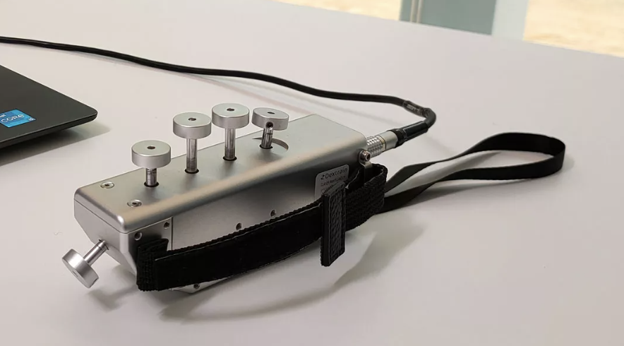
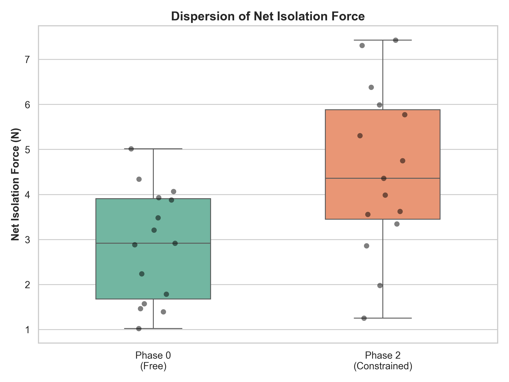
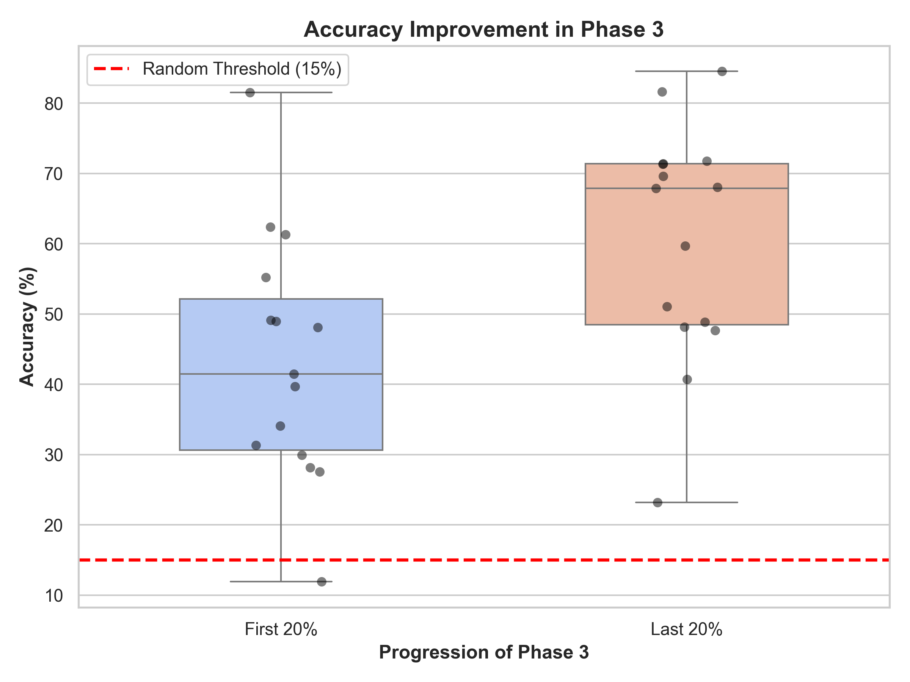

Recherche clinique
Forest of Senses
Un environnement audio-visuel qui induit une adaptation motrice mesurable sans donner la moindre consigne, piloté par un capteur de force isométrique à cinq doigts.

Contexte
La rééducation interactive conventionnelle repose sur des consignes explicites : « presse ce doigt, atteins cette cible, tiens N secondes ». Ça garantit la compréhension de la tâche, mais ça étouffe l'exploration spontanée, et avec elle la motivation intrinsèque qui fait tenir une séance entière.
Forest of Senses part de l'hypothèse inverse : on peut induire une adaptation motrice sans jamais donner de consigne. L'environnement cible deux axes utiles au post-AVC : l'individuation des doigts (inhiber les syncinésies) et la régulation de la force sous-maximale (viser avec précision une cible de force invisible).
Approche
Les forces isométriques des cinq doigts sont captées par le Dextrain Manipulandum (~14 Hz) et injectées dans un environnement Unity. Une machine à états de quatre phases modifie progressivement la contingence entre l'effort et le retour (règle « winner-takes-all », jauge de fatigue virtuelle, cible sous-maximale invisible) sans jamais les révéler.
Aucune interface, aucun score, aucun chrono, aucun texte : c'est le décor qui signale la progression. Le passage de l'hiver au printemps fait écho au retour progressif et non linéaire de la fonction motrice qui caractérise la récupération post-AVC. Chaque frame est journalisée en CSV et analysée hors-ligne en Python (test de Wilcoxon signé, d de Cohen).
La seule consigne donnée :
« Avec ce capteur, vous contrôlez ce qui se passe dans le monde. Explorez librement. Il y a 4 phases, la première est juste une phase de calibration d'une minute. »

Résultat
Étude pilote sur 15 sujets sains (21–63 ans) :
- Force nette d'isolation : 2,88 N → 4,53 N (+57 %), p = 0,0020, d = 0,99.
- Précision sous-maximale : 43,4 % → 60,4 % (+39 %), p = 0,0054, d = 0,86.
- 86,7 % des sujets (13/15) ont identifié consciemment la règle d'isolation ; la modalité auditive domine sur la visuelle.


Démo & code
L'environnement dépend d'un capteur de recherche : il ne peut pas être lancé depuis le dépôt. Des captures vidéo (à lire avec le son) et l'article complet sont disponibles dans le repo.